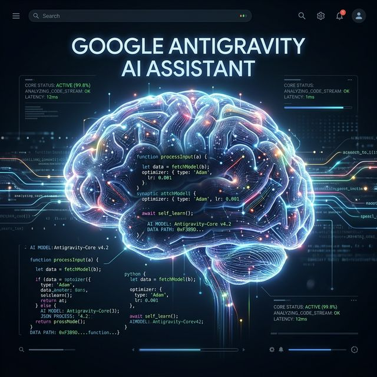
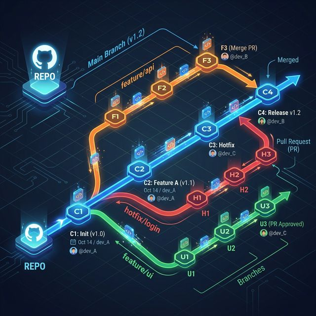
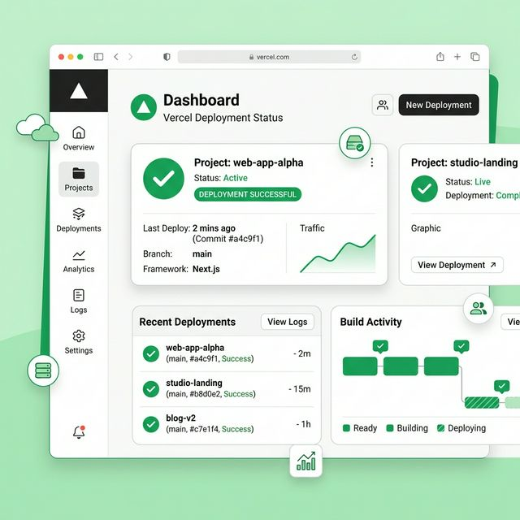

Welcome to a deep dive into how Google Antigravity bridges the gap between AI-driven development and seamless cloud deployment. This workflow transforms abstract engineering requests into perfect, instantly deployed assets at the Edge.
1. The Intelligence Layer: Google Antigravity
Google Antigravity operates natively in your OS file system. When you ask it to modify your application, it doesn't just guess or rewrite blank slates. It parses your Abstract Syntax Tree (AST), ensuring it perfectly maintains your existing stylistic syntax mapping.

You have full, immediate control over local state. Until you explicitly prompt it to deploy, Antigravity functions as a purely local pair-programmer orchestrating files autonomously before touching the cloud.
2. The Source of Truth: GitHub Version Control
Once local AI operations conclude, Antigravity marshals your code sequentially to GitHub to guarantee traceability and compliance.

Atomic Commits
Antigravity constructs highly-specific commits combining exact Line-Range diffs, explicitly detailing what was changed.
Git Hooks Execution
During `git push`, the local machine securely executes any pre-commit or pre-push hooks (like Prettier, ESLint, or Jest tests).
Git SHA Tracking
Every push generates a unique SHA-1 hash. This SHA serves as the immutable "receipt" transmitted to Vercel.
3. The Execution Engine: Vercel Hosting Edge
The magic handover happens via Serverless Webhook Payloads. GitHub detects the inbound `git push` event on the mapped branch, and posts a payload containing the SHA-1 directly to a pre-defined Vercel endpoint.

Deep Dive: Serverless Edge Compilation
Vercel authenticates the GitHub App token and provides rapid edge deployments through several key mechanisms:
- Dependency Analytics: Vercel reads the `package.json` and globally caches `node_modules`, drastically reducing deployment time.
- Framework Inference: It automatically detects frameworks like Next.js or Vite and maps out execution commands inherently.
- Edge Distribution: Compiled assets (`.html`, `.css`, `.js`) replicate instantly across Vercel’s global CDN points-of-presence (PoP).
Resiliency & Environments
This CI/CD architecture is incredibly resilient. It prevents human developers—or Antigravity executing a prompt—from inadvertently damaging live traffic.
When deploying to feature branches, Vercel dynamically produces an isolated, immutable Preview Domain. If a deployed commit to `main` causes regression, developers simply rely on Vercel's "Instant Rollback" features, allowing them to route traffic instantaneously back to unharmed production SHAs.
Antigravity and this ecosystem eliminate manual release engineering entirely.
20+ years of enterprise technology leadership across cloud, infrastructure, and digital workplace. Passionate about sharing practitioner knowledge and advancing the profession.